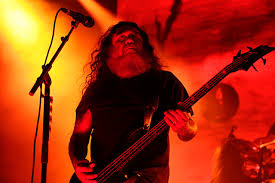
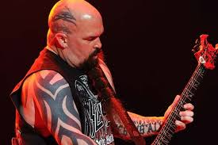
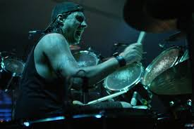
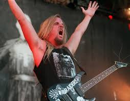

Tom Araya
Kerry King
Dave Lombardo
Jeff
No início de 2011, Jeff Hanneman contraiu uma fasciíte necrosante, após ser picado por uma aranha. A doença, que é uma rara infecção no tecido subcutâneo, quase o levou à morte e fez com que perdesse parte do músculo do braço. Desde então, ele se afastou de alguns shows da banda para que pudesse se recuperar.Não se sabe se a doença de pele estava ligada à sua insuficiência hepática. Mais tarde, resultados revelam que a causa da morte se deve à cirrose hepática em razão de problemas com o alcoolismo.Hanneman morreu aos 49 anos.